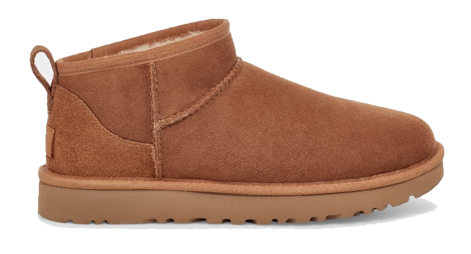

UGG Classic Ultra Mini Boot
hestnut
О модели
Цена: 19 990 ₽
Материалы: каучук, овчина, замша
Размеры в наличии: 35-42 (EU)
Классическая модель с небольшим современным дополнением - это UGG Classic Ultra Mini Boot. Снаружи выполнены из натуральной замши, внутри овчинный мех, и конечно современное дизайнерское решение - платформа на ботинках.
Проработанные швы не пропускают мороз и влагу внутрь зимней обуви. Угги отлично защищают от холода и подходят под любой образ.
Специальная пропитка замшей позволяет сохранить ботинки такими же, как в день покупки. Не впитывают влагу, грязь и держать оптимальную температуру внутри обуви. Ботинки удобны для длительных прогулок в любое время года, даже если за окном лежат сугробы.
Вернуться к каталогу